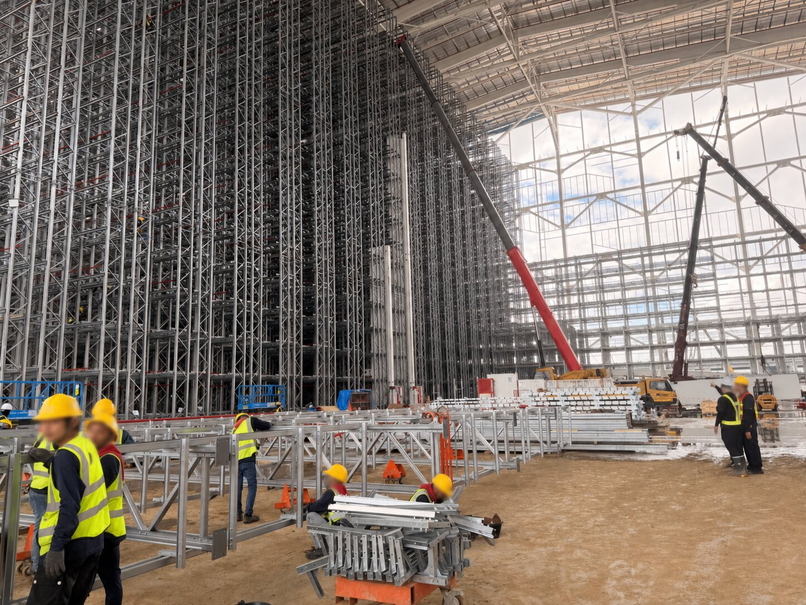
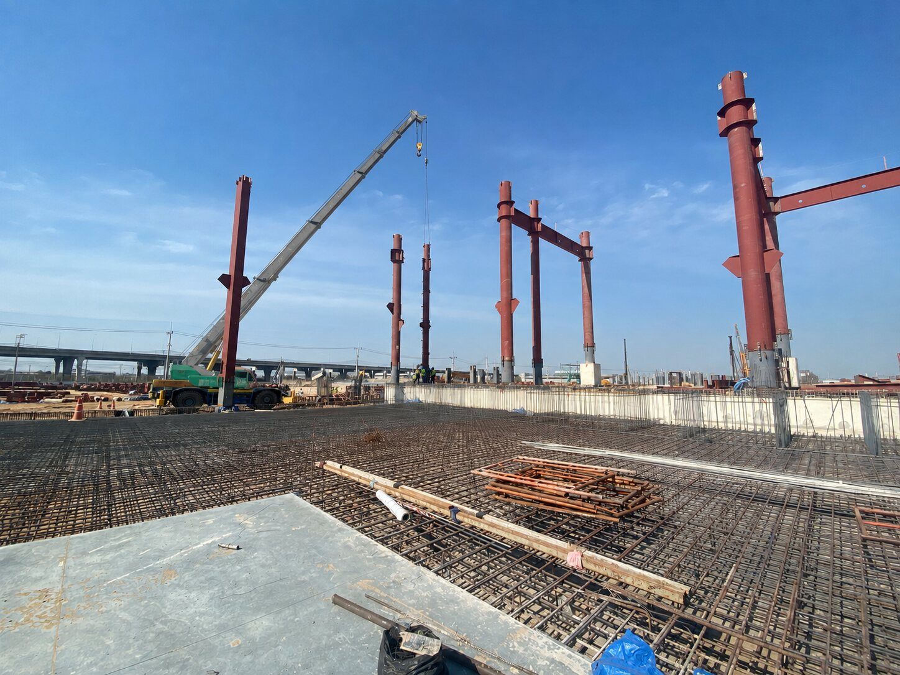
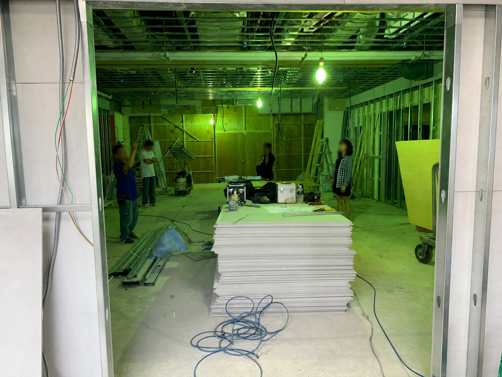

需求與詢價條件建立
整合圖面、規格、數量、工法、施工界面與驗收條件，建立一致的詢價範圍及技術基準，降低漏項與認知差異。
OUTPUT · RFQ SCOPE01 · PROCUREMENT APPROACH
工程設備採購橫跨需求、工程商務、合約、供應商、成本與交付。我的管理方式是先建立共同基準，再以里程碑、責任窗口與決策節點串接各階段，持續確認範圍、成本、品質與時程是否仍然一致。
整合圖面、規格、數量、工法、施工界面與驗收條件，建立一致的詢價範圍及技術基準，降低漏項與認知差異。
OUTPUT · RFQ SCOPE依技術能力、產能配置、品質系統、交期承諾、報價完整性與履約紀錄進行篩選，確認進入評選與合作的條件。
OUTPUT · SUPPLIER SHORTLIST拆解材料、製作、施工、風險與付款條件，辨識價差來源及可協商項目，並評估替代方案對成本、品質與交期的連動影響。
OUTPUT · COMMERCIAL REVIEW將工作範圍、交付標準、付款節點、驗收、保固、變更及違約責任納入合約條件，確保核決內容具備履約與追溯依據。
OUTPUT · CONTRACT POSITION追蹤製作、出貨、進場、安裝、測試、驗收與請款節點；偏差發生時，釐清原因、責任及影響，提出可執行的處理方案。
OUTPUT · DELIVERY CONTROL依品質、交期、成本、配合度與異常改善成效檢視履約表現，更新供應商分級、合作條件及備援方案，作為後續尋源與議價依據。
OUTPUT · PERFORMANCE REVIEW02 · FEATURED PROJECT CASE
匿名化案例｜自動倉儲與鋼構設備專案此案例整合自實際工作方法與專案紀錄；客戶、供應商、日期、合約金額及辨識資訊均已匿名化。重點不在揭露案名，而在說明我如何同時承接採購與專案責任。

設備、鋼構、輸送與機電介面必須同步確認。

交期管理需延伸至安裝、測試與缺失改善。

資訊差異需形成責任、期限與可執行方案。
自動倉儲、輸送設備、鋼構平台、配電及相關工程材料。
需求／圖面、詢比議價、合約、製作、進場、驗收與請款。
辨認漏項、前後依賴、資源衝突及現場條件變更。
單一專案成本改善，同時保留必要品質與交付條件。
將圖面、數量、工法、設備介面、現場限制與驗收條件整理成可詢價範圍。
RFQ · SCOPE · INTERFACE拆解材料、製作、施工、交期、付款及風險責任，關閉漏項後再進行議價。
COST · QUOTATION · NEGOTIATION明確定義交付、驗收、保固、變更與付款節點，使談判結果具備履約依據。
CONTRACT · MILESTONE · LIABILITY以里程碑、Issue Log與出工／成本紀錄掌握製作、進場、安裝、測試與請款。
DELIVERY · ISSUE · CLOSEOUTPROJECT CONTROL VIEW
依月份、工項及資源類別整合出工、加班、機具投入與異常紀錄，持續比對計畫與實際差異；當偏差可能影響成本或里程碑時，進一步釐清原因、責任與處理方案，作為資源調整及管理決策依據。
前置工序延後；評估分區進場以維持最終驗收日。
到貨偏差已以施工順序調整吸收，暫不影響關鍵路徑。
03 · PROJECT PROCUREMENT WORKBENCH
以下工具以匿名化情境重建，從多專案優先排序延伸至詢比價、成本、合約、供應商、交付異常及決策摘要。專案名稱、金額、供應商與日期均為示意資料，不含任職公司或客戶機密。
| 專案／採購包 | 目前階段 | 下一里程碑 | 成本狀態 | 交付風險 | 待決策事項 | 責任窗口 |
|---|---|---|---|---|---|---|
| P-01 自動化輸送設備 | 最終議價 | 03/18 商務定案 | 基準內 | 可控 | 尾款與SAT綁定 | 採購／工程 |
| P-02 鋼構平台增設 | 製作 | 03/22 材料到廠 | 基準內 | 注意 | 分批交貨方案 | 供應商／現場 |
| P-03 配電工程 | 進場安裝 | 03/15 分區送電 | 待確認 | 高 | 夜間施工窗口 | 工程／營運 |
| P-04 設備復機 | 測試驗收 | 03/20 SAT | 追蹤中 | 低 | 缺失關閉順序 | 供應商／專案 |
依最終交付影響、時程承諾、前後依賴、資源負荷與風險排序；需要跨部門取捨的事項，明確標示決策者、截止日與未決影響。
| 比較項目 | 需求基準 | 供應商 A | 供應商 B | 供應商 C | 判斷 |
|---|---|---|---|---|---|
| 工作範圍 | 設備＋安裝＋測試 | 完整 | 缺教育訓練 | 安裝另計 | A／B 可比較 |
| 技術符合度 | 介面規格 v2.1 | 96% | 91% | 84% | C 需重提方案 |
| 交期 | 14 週內 | 13 週 | 12 週 | 16 週 | C 不符基準 |
| 付款條件 | 20 / 50 / 30 | 30 / 60 / 10 | 20 / 50 / 30 | 50 / 40 / 10 | A 可再談尾款 |
| 總持有成本 | 含保固與備品 | 基準 100 | 基準 103 | 基準 97 | C 另有漏項 |
邀請 A、B 進入第二輪議價；先關閉工作範圍與保固差異，再比較調整後的總持有成本。
合併非必要的特殊尺寸，降低換線與客製加工成本。
以現場可用空間和運輸頻率比較總成本，不只看單次運費。
將不明確的現場條件改為共同勘查與明確假設，避免重複計價。
以規格、批次與責任條件形成三組談判方案；每一項節省均保留對品質、交期與後續變更的影響說明。
僅寫「依現場驗收」，缺乏測試方法、通過標準與缺失改善期限。
ACTION · 補入 FAT／SAT 與量化門檻未區分供應商延誤與業主變更，且缺乏里程碑與預警義務。
ACTION · 建立基準日與責任排除條件出貨前付款比例偏高，尾款不足以涵蓋安裝、測試與缺失改善。
ACTION · 調整至可驗證的交付成果缺乏變更提出、估價、核准與工期影響的書面流程。
ACTION · 未核准不得逕行施作確認起算點、回應時間、排除條件與關鍵備品清單。
ACTION · 納入移交文件確認圖面、程式、操作手冊及維修資料的交付與使用權。
ACTION · 綁定驗收與尾款需求端簽認 v2.1
供應商改空運關鍵料；不影響組裝
測試腳本於兩週前確認
現場介面未完成；需決定分區進場
以分區安裝追回工期
需要管理決策：同意分區進場並調整夜間施工窗口，可維持最終驗收日；若維持原工序，驗收預估順延4日。
04 · EXPERIENCE EVIDENCE
自動化設備建立了採購與交付責任；大型營建機電建立了圖說、介面與履約管理；國際零售工程則強化品牌要求、現場限制與跨文化協作。
自動倉儲、輸送設備修復、鋼構平台、配電與工程材料；從需求與圖面條件、詢比議價、合約到製作、安裝、驗收與結案。
接觸空調、消防、給排水、電力與弱電工項，依設計圖說、規格、數量、施工介面及現場條件整理採購與發包需求。
參與機場商業空間與品牌櫃位專案，協調品牌、設計、工程、供應商及現場，管理設計確認、採購發包、施工、驗收與開幕節點。
05 · PROFESSIONAL POSITIONING
「價格是否合理，必須回到規格、範圍與責任；採購是否成功，最終仍由履約結果驗證。」
具AutoCAD ACU證照，熟悉鋼構、金屬材料、輸送設備、自動化與營建機電情境；能讀取圖面與規格、確認技術條件，並與工程及供應端釐清執行界面。
從報價假設、成本結構、付款、保固、變更與履約責任形成談判方向，並將結果落實至合約與交付節點。
TOEIC 635，可處理英文規格、報價、需求釐清與會議資料；重要技術及商務條件均以書面紀錄確認。
AMBER CHANG · PROJECT PROCUREMENT PORTFOLIO
本作品集依實際工作方法與專案紀錄匿名化重建，用於呈現工程設備採購、專案進度、商務談判、合約管理、供應商評估及交付風險能力。